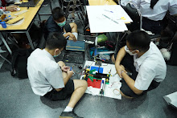

วัตถุประสงค์
เป็นต้นแบบหุ่นยนต์คัดแยกสื่งของในโรงงานอุตสาหกรรมโดยใช้ปัญญาประดิษฐ์ในการคัดแยกรูปทรงลูกบาศก์กับทรงกระบอกพร้อมทั้งใช้สายพานในการเคลื่อนที่วัตถุ
กระบวนการทำงาน
เมื่อกดปุ่ม "Start" ที่ GUI บนคอมพิวเตอร์ ROS2 pyqt5 ui จะรับค่าจากโปรแกรม Python แล้วส่งค่าไปยัง Serial Port ซึ่งเชื่อมต่อกับบอร์ด Arduino Nano เพื่อให้สายพานเคลื่อนนำวัตถุไปยังบริเวณกล้องจากนั้นโปรแกรม Python ในส่วนการตรวจจับวัตถุจะทำการตรวจจับวัตถุแล้วส่งค่าไปที่ Arduino Nano จากนั้น Servo จะทำการปัดวัตถุไปในที่เก็บของวัตถุนั้นๆ และยังมีการแสดง log ใน Terminal
ส่วนประกอบ / วัสดุ
- Arduino Nano
- Micro Servo
- TT Motor
- Conveyor
- Adapter 12v
- Arduino Nano AddTension
- Computer
- USB Camera
- 2 Channel Relay